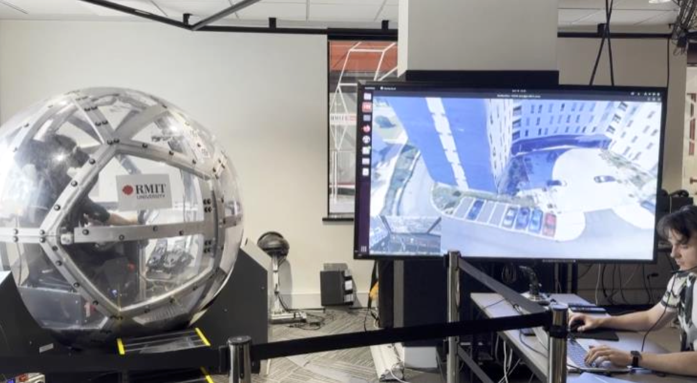

Hello! I'm a computer science PhD student at RMIT University in Melbourne. In a previous life, I worked in fintech as a product owner and business analyst.
Meta
Library
Books I've read, music I listen to.
Recipes
This is a collection of recipes I like to cook. Some are my own, most are not. I've tried to credit the original author if I have it.
- Black-eyed bean curry
- Borek dough
- Quick bread
- Chilli oil
- Corn congee
- Fermented tomato soup
- Lemon cake
- Oatmeal biscuits
- Oyakodon
- Peanut butter biscuits
- Pretzel dogs
- Roast potatoes
- Roast tomato soup
- Soba
- Spicy mushroom noodle soup
- Steamed buns
- Swede gnocchi
- Sweet potato gnocchi
- Tomato relish
- Udon
- Warrigal greens 'spanakopita'
Research
Honours thesis
Growing Wireworld circuits with Neural Cellular Automata, supervised by Sebastian Sardiña at RMIT, Melbourne.
MoveMemorE vehicle motion replay
For my Bachelor's capstone project, my team developed VR software that uses GPS and inertial data to replay recorded journeys. The software connects directly to the NOVA motion platform to control its 360° motion, synchronising physical movement with the VR visuals to recreate the sensation of the original journey.

Games and Artificial Intelligence Techniques
These pages are content from a university course I tutor.
- Introduction to Games and Artificial Intelligence Techniques
- Steering Behaviours
- Pathfinding
- Monte Carlo Tree Search
- Decision Making I
- Decision Making II
- Adversarial Search
- Procedural Content
- Tabular Reinforcement Learning
- Neural Networks and Deep RL
- State Representation and Reward Functions
- Bonus: Imitation Learning
- Bonus: AI and Narrative